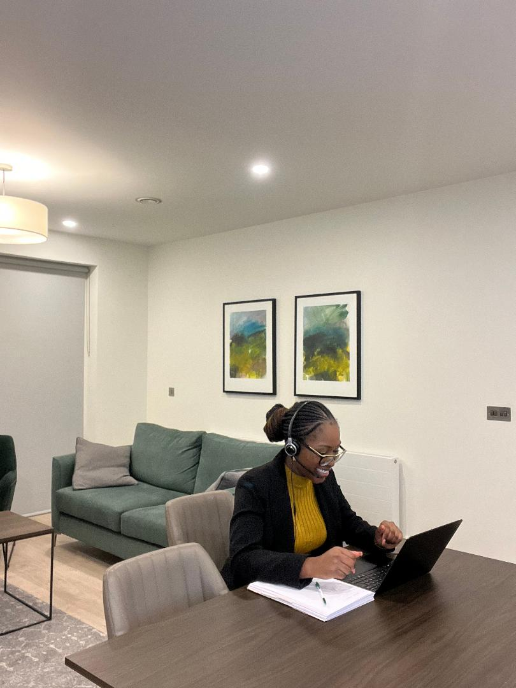
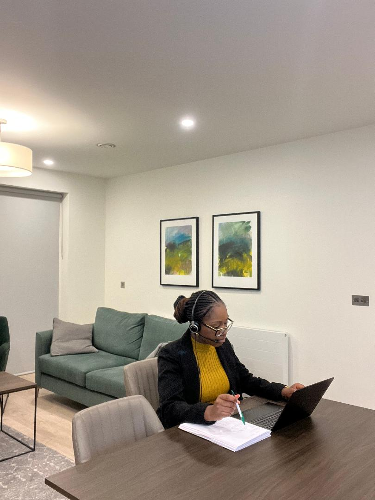
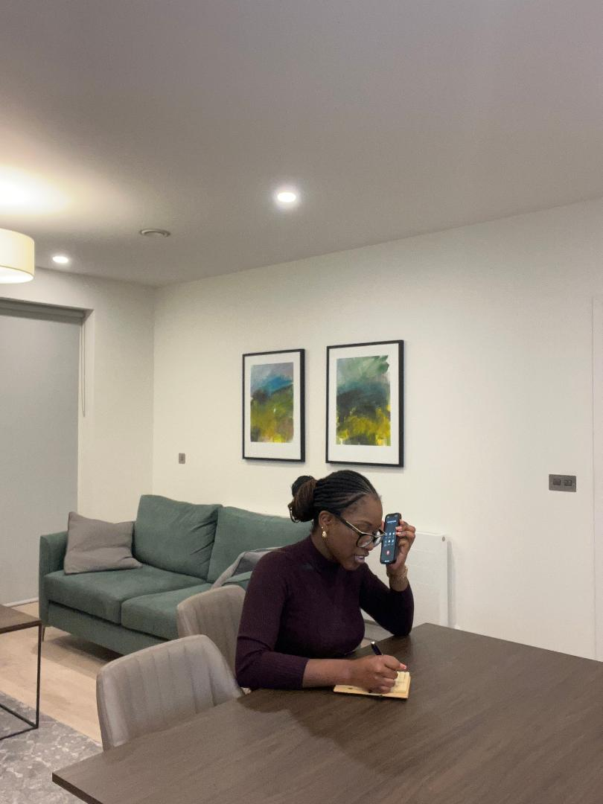
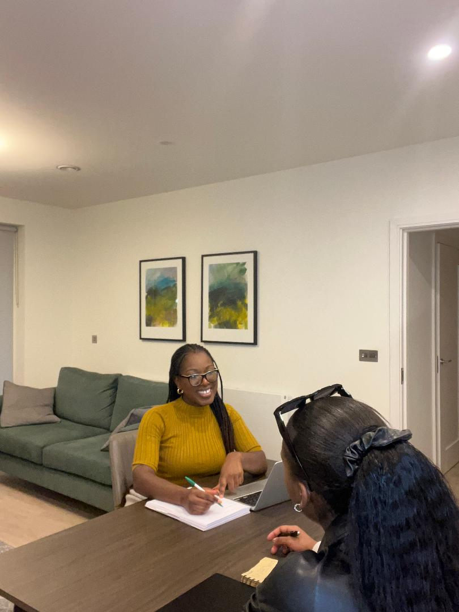

Hey there, I'm Hazel Oppong- a native German with Ghanaian roots and a linguist based in Dublin. With my up-to-date DBS check, I offer professional and reliable services in German and Twi, including online German tutoring, telephone interpreting, face-to-face interpreting, video interpreting, translation, and localization.
As a linguist, I'm passionate about fostering cross-cultural communication and helping individuals and businesses effectively convey their messages. Whether you need to enhance your German language skills or require assistance with legal proceedings, medical appointments, social services, business meetings, or any other communication needs, I'm here to ensure that the meaning and context of your message is accurately conveyed.

As a native German speaker, I have been providing 1:1 German tutoring sessions for the past 5 years. My sessions are tailored to individuals at the beginner to intermediate levels, including KS3 and GCSE level students. With my expertise and experience, I can help you improve your German language skills and achieve your language learning goals.

As a professional interpreter fluent in Twi/Akan, I provide Video Interpreting services for legal proceedings, medical appointments, and business meetings, among other scenarios. With my expertise, I can ensure that the meaning and context of the original message are not lost in translation, providing you with accurate and reliable communication through a convenient video format.

As a professional interpreter fluent in Twi/Akan, I offer reliable Telephone Interpreting services for legal proceedings, medical consultations, business meetings, and more. With my expertise, you can be confident that your message will be accurately conveyed in real-time, ensuring that the intended meaning and context are maintained.
Whether you need interpreting services for public or private sectors, my Telephone Interpreting services can provide a convenient solution to your communication needs.

As a professional interpreter fluent in Twi/Akan, I provide face-to-face interpreting services for public and private sectors, including court and conference interpreting, medical appointments, and educational settings. My services ensure accurate and real-time translation of spoken language, making them extremely beneficial for legal proceedings, medical appointments, and business meetings.
In addition to my interpreting services, I also provide professional Translation services from German into English and vice versa. With my expertise in both languages, I can ensure that your documents, transcripts, and other materials are accurately translated while maintaining the intended meaning and context. Whether you require translation services for personal or professional purposes, I am here to help you achieve your communication goals.
As a native German speaker and professional interpreter, I provide Localisation services for websites, software, and other materials from English to German and vice versa. With my expertise in both languages, I can help you effectively communicate your message to your target audience by adapting your content to suit cultural and linguistic nuances.